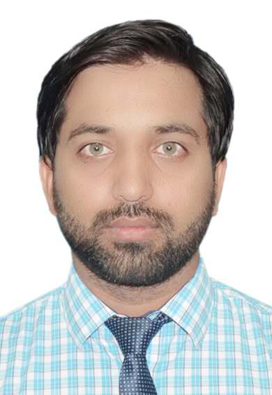

01
Non-Hermitian Photonics
Exceptional-point physics, dissipative optical systems, effective non-Hermitian Hamiltonians, PT/APT concepts, and polarization-controlled optical responses.

PhD Researcher in Optics & Photonics
PhD researcher at Xi'an Jiaotong University, China, working on nonlinear and non-Hermitian optical phenomena, polarization-controlled light–matter interactions, rare-earth optical systems, and functional photonic materials.
ABOUT
I am a PhD researcher at Xi'an Jiaotong University, China, working at the intersection of nonlinear optics, non-Hermitian photonics, rare-earth optical systems, and light–matter interactions.
My current research explores polarization-controlled optical responses, exceptional-point physics, nonlinear optical phenomena, and effective non-Hermitian Hamiltonian descriptions of dissipative optical systems.
My broader research background also includes functional materials, oxide heterostructures, photoresponse, and materials–photonics interfaces.
PhD Researcher
Xi'an Jiaotong University
Xi'an, China
Research Area
Nonlinear Optics & Photonics
RESEARCH
My research combines optical physics, non-Hermitian systems, nonlinear phenomena, rare-earth materials, and photonic structures.
Exceptional-point physics, dissipative optical systems, effective non-Hermitian Hamiltonians, PT/APT concepts, and polarization-controlled optical responses.
Nonlinear optical responses, quasi-BIC phenomena, nonlinear light–matter interactions, and polarization-dependent optical effects.
Optical and fluorescence phenomena in rare-earth systems, particularly Sm³⁺-based materials and polarization-controlled optical processes.
Functional optical materials, oxide heterostructures, photoresponse, and the integration of materials science with photonic applications.
RESEARCH HIGHLIGHTS
Study of nonlinear quasi-bound states in the continuum and polarization-dependent non-Hermitian optical behavior in a rare-earth optical system.
Published · IEEE Photonics Technology Letters
Investigation of polarization-dependent switching between step-like and continuous optical responses using an effective non-Hermitian framework.
Manuscript under revision · Optics Letters
Investigation of localization, alignment, density-of- states behavior, and self-organization in nonlinear dissipative optical systems.
PUBLICATIONS
Muhammad Asad Iqbal et al.
IEEE Photonics Technology Letters , 38(10), 651–654 (2026).
Muhammad Asad Iqbal et al.
Optics Letters (2026), under revision.
Zeeshan Mujahid, Muhammad Asad Iqbal et al.
Optik .
EDUCATION
Xi'an Jiaotong University, China
Research focus: nonlinear optics, non-Hermitian photonics, rare-earth optical systems, and light–matter interactions.
Northwestern Polytechnical University, China
Research involving oxide heterostructures, functional materials, and photoresponse.
CONTACT
I am interested in research collaborations and postdoctoral opportunities in nonlinear optics, non-Hermitian photonics, rare-earth optical systems, functional materials, and related interdisciplinary areas.